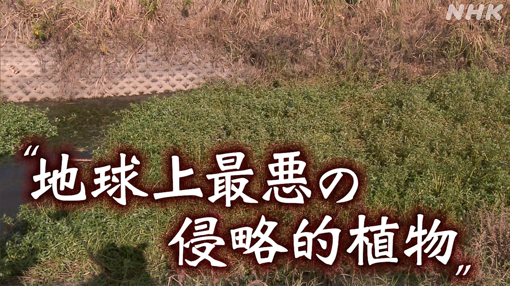
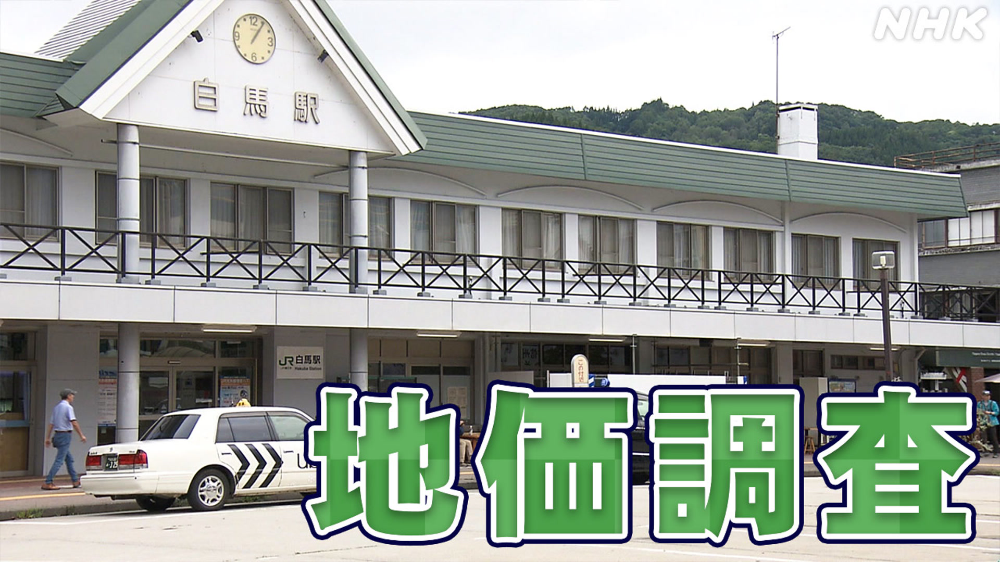
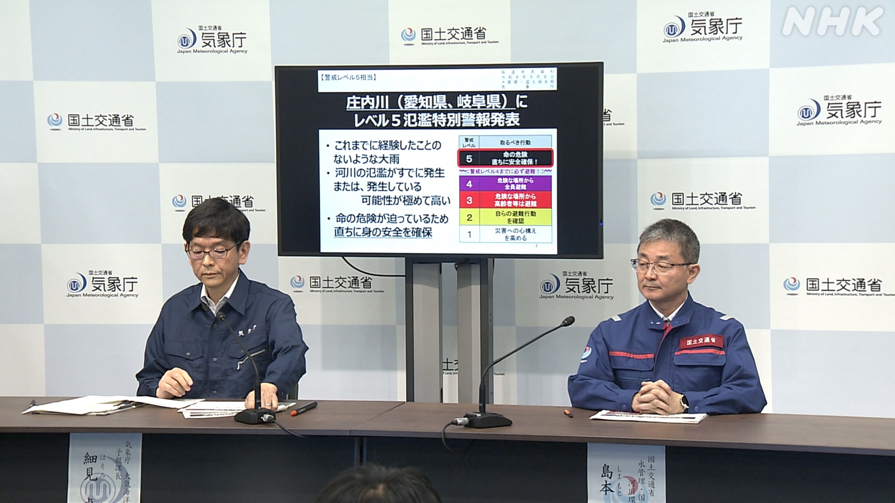

最新ニュース
1️⃣ 千葉県の印旛沼 稲などに悪い水草が広がる可能性

先月の台風の大雨で千葉県の印旛沼では堤防が壊れて、沼の水が外に出ました。この印旛沼から田んぼの稲などにとても悪い影響がある水草が流れて外に広がった可能性があります。
この水草は、南アメリカから日本に入ってきた「ナガエツルノゲイトウ」で、とても強く育って田んぼでもたくさん増えます。
そして、稲の成長の邪魔をします。
国や県などはこの水草を見つけて、取っています。
千葉県では、この水草を見つけたら、スマートフォンのアプリで知らせるように言っています。
2️⃣ アメリカ 世界でいちばん大きい「動物のための橋」
アメリカのカリフォルニア州などが、動物のための橋を作っています。
カリフォルニア州では、ピューマなどの動物がいる場所に高速道路があります。動物が車とぶつかることなどが問題になっています。
このため、カリフォルニア州などは、4年前から、高速道路の上に動物たちが通る橋を作っています。
橋の長さは76m、幅は53mです。世界でいちばん大きい動物のための橋になります。橋には、動物が通りやすいように、たくさんの植物を植えています。
工事は、今年12月に終わる予定です。
3️⃣ 土地の平均の値段 5年続けて上がった

国土交通省は、今年7月1日の日本の土地の値段を発表しました。2万1400ぐらいの場所を調べました。
土地の平均の値段は、去年より1.5%上がりました。5年続けて上がっています。値段は、特に東京や大阪で大きく上がっています。
東京や大阪では、高い値段のマンションを買う人が今もたくさんいます。外国から多くの人が旅行に来る場所では、店やホテル用の土地を買う人がたくさんいます。
日本のいろいろな場所を見ると、値段が下がった所もたくさんあります。住む人が少なくなっている場所などでは、値段が続けて下がっています。
4️⃣ 愛知県と岐阜県の庄内川にレベル5の「氾濫特別警報」

雨がたくさん降って危険になっている所があります。
愛知県と岐阜県を流れる庄内川は、たくさんの雨で川の水がとても増えています。
気象庁と国土交通省は、午後6時20分、庄内川にレベル5の「氾濫特別警報」を出しました。レベル5はいちばん危険なときに出します。
庄内川では、すでに水が川の外に出ている所があるかもしれません。
避難所に行くのが難しかったり危なかったりする場合は、建物の2階以上の高い場所に行くなど安全をいちばんに考えてください。
- 〜から
- 〜ても / 〜でも
- 〜など
- 〜がある / 〜がいる
- 〜や〜など
- 〜ている / 〜でいる
- 〜ように
- 使役 (〜させる / 〜せる)
- 〜ため
- 〜こと
- 〜になる
- 〜やすい
- 〜予定だ
- 〜予定
- 〜くらい / 〜ぐらい
- 〜より
- 〜ところ
- 〜かもしれない / 〜かもしれません
- 〜てください / 〜でください
- 〜以上
- 〜たり〜たりする
vebaev.github.io
Generated: 2026-10-13 18:00:02 UTC